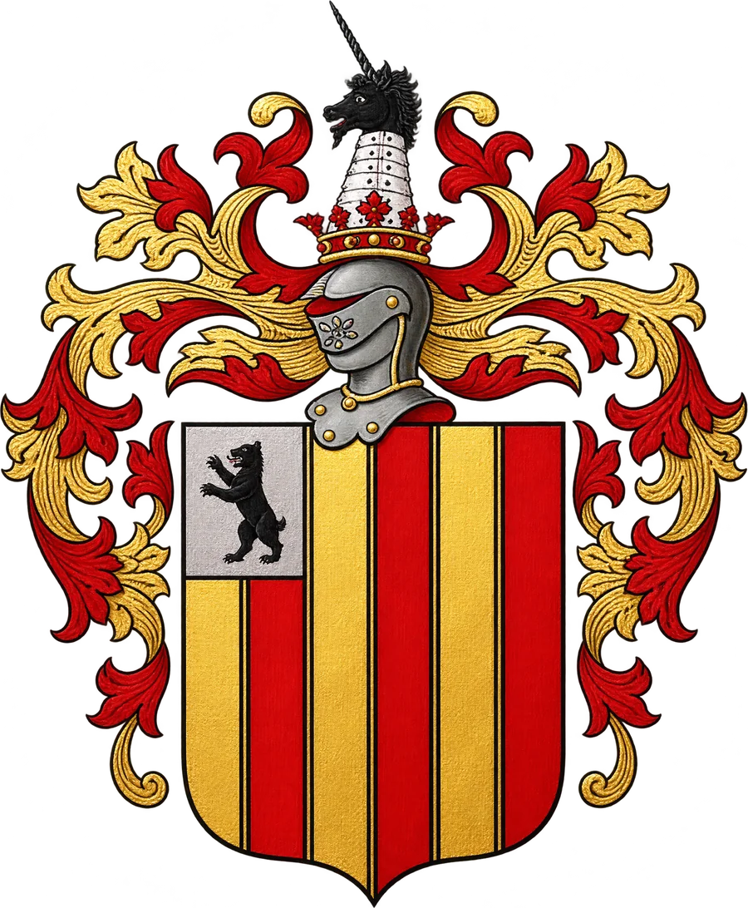

2026
Iowa governor, Republican primary
Senior advisor to Zach Lahn
Won a five-way primary over a sitting U.S. congressman and cleared the 35% threshold to win outright.
Campaign manager and political strategist. Thirteen years running state and federal races, from a first field job in Iowa to a governor's race.
Based in Lincolnville, Maine, and willing to relocate.

Close races, decided by turnout. Certified results from campaigns I managed or helped lead.
Senior advisor to Zach Lahn
Won a five-way primary over a sitting U.S. congressman and cleared the 35% threshold to win outright.
Campaign manager for Zach Nunn
Unseated a two-term incumbent by 2,066 votes, with a turnout program that ran up margins in 20 of 21 counties.
Campaign manager for Claudia Tenney
Won an open seat rated a toss-up, in a three-way race, on a district-record fundraising plan.
Political director for David Young
Directed field staff to 50,000+ voter contacts and built the turnout program behind a 10-point win.
Vote shares are from certified returns; the 2026 primary share is Zach Lahn's against the second-place finisher in a five-way field, and 2016 was a three-way race.
I have run state and federal campaigns since 2013: U.S. House, U.S. Senate and governor's races, from a first field job in Iowa to managing a $2.6 million congressional campaign and advising a statewide one.
The work is the same at every level. Set the targets, build the program that reaches the voters who decide the race, hire people who can execute it, and keep the plan honest week by week. Most of what I know is about turnout and persuasion in close races, delegate and convention strategy, and building a campaign from nothing.
Lately that has included producing short-form video and interactive web content, and building Votes to Win, a campaign-planning web app for first-time candidates. I grew up acting and once planned to study film, which still shows in how I think about a message. When I'm not on a campaign I'm in Maine, where my family has been since the 1750s.
Lahn for Governor, Iowa
Strategy, targets and weekly plans for a first-time candidate building a statewide campaign from zero; won a five-way primary over a sitting congressman, and now directing general-election strategy and voter targeting.
Pine Island Camp, Maine
Fundraising, donor relations and the donor database for a nonprofit summer camp, with a seasonal staff of 40.
Iowans for Zach Nunn, IA-03, U.S. House
Built and ran a $2.6 million campaign that unseated a two-term incumbent by 2,066 votes, with a turnout model and field program that ran up margins in 20 of 21 counties.
Massachusetts Red Grassroots Action and John Kingston for U.S. Senate, Boston
Managed regional field directors statewide for Gov. Baker’s 2018 re-election; designed the delegate strategy that put Kingston on the Senate primary ballot; built a field data system the state party later adopted.
Claudia Tenney for Congress, NY-22
Ran a five-point win with eight staff and forty interns across seven county offices, then ran the district office.
Iowa and Washington, D.C.
Political Director, Young for Iowa (IA-03); Deputy Campaign Manager, Schultz for Iowa; intern at FP1 Strategies in Washington.
A campaign-planning web app for first-time candidates: a free win-number calculator and a full campaign plan built from the district's own numbers.
Open Votes to WinA community site for the Somerset village church my family left in the 1630s: its history, the families who sailed from it, and a family wall.
Visit the siteFor campaigns, consulting or a conversation about a role, email is fastest.